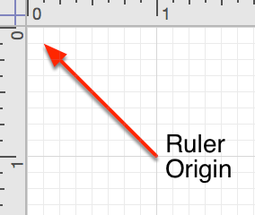
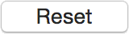

Getting to Know OmniGraffle 6.1❯
Getting to Know OmniGraffle 6.1❯
Sure, it’s still the same great chart-drawing, prototyping, wireframing app you’ve grown to love and adore, but we’ve pulled out the stops with OmniGraffle 6.1. The biggest change you’ll notice is a new unified user interface. Take some time to mouse over the following image to learn more about OmniGraffle’s user interface.
By default, the Inspectors appear in a sidebar to the right of the Canvas. You’ll be happy to know that we have brought back the floating Inspectors with OmniGraffle 6.1! You can use the new Inspectors menu to choose to have all of the inspectors in one floating window, or choose to have them appear as individual floating palettes.
Now that you have a better understanding of how OmniGraffle is organized visually, let’s dive in deeper and look at everything OmniGraffle has to offer. If you haven’t launched OmniGraffle yet, now might be a good time to do that.
In addition to the grid, which you can turn on in the Grid Canvas inspector (Command–4), you can also turn on rulers (View ▸ Rulers, or Command-R) to help you position objects on the canvas.
You can use a combination of ruler guides and OmniGraffle’s Smart Guides to position and perfectly align objects on the canvas. To add a ruler guide to your canvas, click and hold on either the top or left ruler bar and then drag a guide onto the canvas. The guides you drag in are bright pink, so they are easy to recognize. There’s no limit to the number of guides you can drag onto the canvas, so don’t be shy.
By default, the very upper-left corner of a canvas is known as its origin (that is, the point from which all ruler measurements originate, and the coordinates are 0,0). To change the origin, click and drag the origin from the corner where the rulers meet. (Alternatively, you can enter Origin values in the Units Canvas inspector.) The coordinates in the Geometry inspector are based on this origin point.
To reset the origin to the 0,0 position, just click on the origin point between the two rulers. Click the origin point again and the origin point changes to its previous position.
When you have selected an object, the area above the ruler—the Inspector Bar—contains controls for editing basic attributes of selected objects:
When entering or editing text you’ve placed on the Canvas, tab stops appear in the top ruler and text formatting controls appear in the Inspector Bar. You can style text, change the spacing and alignment, or drag tab stops to and from the ruler.
At the bottom of the Inspector sidebar, you’ll find a tray which contains style “chits” for the selected object.
The isolated chit on the left represents all of the styles applied to the selected object, while the rest of the chits represent each of the styles applied to the object, such as fill, stroke, image, shadow, shape, font, and text position. Drag any of these chits to another object, to a group in the Selection inspector, or to a tool in the tool palette, to copy the style there.
If you select more than one object, only the styles that those objects have in common appear in the style tray.
A standard feature among Mac apps, OmniGraffle’s preferences can be accessed from the menu bar (OmniGraffle ▸ Preferences), or with the Command-, keyboard shortcut.
Two features that all of the preference panes offer are the ability to Reset () any changes you’ve made to the defaults settings, and quick access to Help () documentation for that pane.
The General preferences give you control over basic OmniGraffle settings, such as what OmniGraffle does at startup, whether new documents open with a blank canvas or you’re taken to the template chooser, and things like text editing and selection behaviors. You can also turn on Multi-Touch for trackpad support, and opt for OmniGraffle to only show you the inspectors you need when you’re working on the canvas.
Options include:
When you click in the middle of a shape object that isn’t filled with an image or color, you might want to select the object or you might want to select whatever is behind it. Use the Click through objects with no fill checkbox to indicate which you prefer.
The Drawing Tools preferences provides you with another way to organize the tools you see in OmniGraffle’s toolbar and set their Hot Keys. You can also define how you interact with the tools, and set the behaviors for line creation and editing.
You can drag tools around in the list to reorder them in the palette. Move the separator line to change where the expansion button appears in the toolbar; move it to the end of the list to get rid of the button entirely.
Double-click a tool’s hot key to change it. A hot key activates a tool for only as long as you hold the key down; once you release the key, the previously active tool becomes active again.
For those times when you need to make a presentation, say to show off the new user interface for an app you’re developing or when you’re showing a client how you plan to redesign their home, OmniGraffle Pro offers Presentation mode. Available by choosing View ▸ Start Presentation, OmniGraffle takes over your entire screen so you can easily show off your work to everyone in the room.
Use the Presentation preferences to configure your settings for making presentations.
Each canvas acts as a slide; use the arrow keys to move between canvases. You can also press Return or Enter, or click, to move to the next canvas. If your Presentation preferences are set to highlight an object when you click it, doing so won’t advance to the next canvas; you can still click an empty area of the canvas to advance.
While in Presentation mode, you can get to the menu bar by moving your mouse to the top of the screen. The menu bar goes back into hiding when you move the mouse away. If you move the mouse to the bottom of the screen, a navigation interface appears, with buttons for going forward or back, exiting, or moving directly to a particular canvas.
You can highlight objects to draw attention to them during the presentation. Use the Presentation preferences to control how highlighting happens.
Actions set up in the Action inspector work while in presentation mode. When you click an object that has an action assigned, it performs the action as if you had clicked it with the Browse tool.
If you’ve purchased your copy of OmniGraffle 6 (Pro or Standard) from The Omni Group’s website, OmniGraffle can automatically use your Internet connection to check for new and updated versions.
You can specify whether OmniGraffle will automatically check for updates Daily, Weekly, or Monthly, or if you’re really impatient, you can click Check for Updates Now to see if we’ve issued a new release. This is particularly helpful if you have Check for updates set to check Monthly and you’ve recently heard that a new update is available.
If Check for updates is turned on, you will be notified when there is a new version of OmniGraffle ready for you to download and enjoy. Click Check for Updates Now to look for the newest version manually; you can also choose OmniGraffle ▸ Check for Updates from the menu bar.
Additionally, you can opt in to Include system information when OmniGraffle checks for updates. This sends basic information about your system to us, which we only use to better support various systems with future releases of OmniGraffle. And, as the Update preferences pane says: “This information is kept entirely anonymous,” which means that the information we receive about your system stays with us and is only used by us as we work on future updates of OmniGraffle.